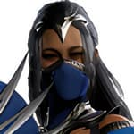
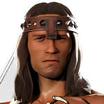
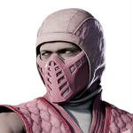

| U = Up/Jump D = Down/Crouch F = Forward/Toward B = Back/Away |
Dash Forward = F, F Dash Backward = B, B Uppercut = (D+BP) Sweep = (B+BK) Pause/Move List = START |
| Universal: FP = Front Punch BP = Back Punch FK = Front Kick BK = Back Kick *TH = Throw (Away) *(F+TH) = Throw (Toward) KA = Cameo FS = Flip Stance BL = Block/Amplify Special Throw (Away) Reversal = FP/FK Throw (Toward) Reversal = BP/BK |
Xbox Series X|S: FP = X BP = Y FK = A BK = B *TH = LB *(F+TH) = (F+LB) KA = RB FS = LT BL = RT Throw (Away) Reversal = X/A Throw (Toward) Reversal = Y/B |
| PlayStation 5: FP = ▢ BP = Δ FK = ✕ BK = O *TH = L1 *(F+TH) = (F+L1) KA = R1 FS = L2 BL = R2 Throw (Away) Reversal = ▢/X Throw (Toward) Reversal = Δ/O |
Switch: FP = Y BP = X FK = B BK = A *TH = L *(F+TH) = (F+L) KA = R FS = ZL BL = ZR Throw (Away) Reversal = Y/B Throw (Toward) Reversal = X/A |
Basic Attacks:
Heaven's Palm: FP
Harmful Hack: (D+FP)
Swinging Kriss: BP
Spinning Truth: (B+BP)
Sinner Stab: (F+BP)
Bleeding Blade: (D+BP)
Devil's Boot: FK
Short Stab: (B+FK)
Soaring Demon: (F+FK)
Quick Poke: (D+FK)
Heavenly Heel: BK
Toe Tap: (B+BK)
Crushing Knee: (F+BK)
Heavy Heel: (D+BK)
Kombos:
Final Blessing: FP, BP [50]
Cleansed Soul: FP, BP, BP [50]
Playful Prickle: BP, FP [70]
Kriss Kross: BP, BP [50]
Raising Spirits: BP, BP, FK [70]
Dancing Blade: (B+BP), BP [70]
Heaven's Light: (B+FK), FP [70]
Crown Cracker: (F+BK), BP [30]
God's Will: (F+BK), BP, FK [70]
Basic Aerial Attacks:
Helping Hand: (UF+FP)
Quick Cut: (UF+BP)
Leaping Light: (UF+FK/BK)
Aerial Kombos:
Soul Punch: UF+FP, BP [28.50]
Kritical Kriss: UF+FP, BP, BP [70]
Kriss Push: UF+BP, FP [66.50]
Bladed Flurry: UF+BP, BP [28.50]
Blessed Boot: UF+BP, BP, FK [90]
Throws:
Shove: (F+TH) / (F+FP+FK)
Demon Dance: TH / (FP+FK)
Breakers:
Kombo Breaker: (F+BL)
Taunts:
Taunt: D, D, D, D
Basic Attacks:
Jawripper: FP
Reflex Tester: (B+FP)
Side Swipe: (D+FP)
Gutbuster: BP
Tarkatan Plunger: (F+BP)
Upper-Clawt: (D+BP)
Kick Off: FK
Bleeding Foot: (B+FK)
Heel Drop: (F+FK)
Heel Smite: (F+Hold FK)
Knee Breaker: (D+FK)
Quick Shave: BK
Cut Down: (B+BK)
Muay Kry: (F+BK)
Klean Kuts: (D+BK)
Kombos:
Gutwrencher: FP, BP [50]
Lobotomizer: FP, BP, FP [70]
Deep Cuts: (B+FP), BP [70]
Gurgler: BP, FP [50]
Euthanizer: BP, FP, BP [70]
Two-Step: FK, BK [70]
Battle Cry: (B+FK), FP [50]
Warrior's Fury: (B+FK), BP [70]
Butcher: BK, BK, BK [57]
Slaughter House: BK, BK, BK, BK, BK, BK [48.5]
Shove Off: (F+BK), BK [70]
Basic Aerial Attacks:
Quick Palm: (UF+FP)
Bird Slayer: (UF+BP)
Karnivorous Kick: (UF+FK/BK)
Aerial Kombos:
Set: UF+FP, BP [30]
Spike: UF+FP, BP, FP [90]
Hellish Heel: (UF+FP), BK [70]
Star Kicker: (UF+BP), BK [81]
Throws:
Shove: (F+TH) / (F+FP+FK)
Quick Taste: TH / (FP+FK)
Breakers:
Kombo Breaker: (F+BL)
Taunts:
Taunt: D, D, D, D
Basic Attacks - With Axe:
Mighty Hook: FP
For The Jugular: (B+FP)
Felling Blow: (F+FP)
Low Blow: (D+FP)
Long Arm: BP
Make Way: (B+BP)
Splitting Headache: (F+BP)
Axe-Cuse Me: (D+BP)
Big Leg: FK
Beneath Me: (B+FK)
Hamstring: (D+FK)
You Suck: BK
Timbeeeeer!: (B+BK)
Battering Ram: (F+BK)
Ankle Slicing: (D+BK)
Basic Attacks - Without Axe:
Mighty Hook: FP
Upchuck: (B+FP)
Barbaric Intent: BP
Raising Stakes: (B+BP)
Double Axe Handle: (F+BP)
Settled Dispute: (D+BP)
Beneath Me: (B+FK)
Low Boot: (D+FK)
General Shao's Kickin': (B+BK)
Battering Ram: (F+BK)
Odd Kick: (D+BK)
Kombos - With Axe:
Fury Strikes: FP, BP [70]
Axe Splitter: (B+FP), BP [70]
Strength Overwhelming: (F+FP), BP [50]
Direct Orders: (F+FP), BP, BP [50]
Forward March: BP, BP [50]
Glory in Kombat: BP, BP, BP [70]
You're Weak: (F+BP), TH [120]
Divide And Konquer: (B+FK), TH [120]
Widow Breaker: (B+FK), BP [50]
Kombos - Without Axe:
Hammerfist: FP, BP [70]
Savage Strikes: BP, BP [50]
Run Over: BP, BP, BK [70]
Haymaker: (B+FK), BP [50]
Basic Aerial Attacks - With Axe:
Strong Axe: (UF+FP)
Superiority Complex: (UF+BP)
Kombat Maneuver: (UF+FK/BK)
Basic Aerial Attacks - Without Axe:
Strong Arm: (UF+FP)
Stiffed: (UF+BP)
Aerial Kombos - With Axe:
Bending Slash: (UF+FP), BP [70]
Clamping Down: (UF+FP), BP, BP [70]
Timber?: (UF+BP), BP [90]
Aerial Kombos - Without Axe:
Bending Slap: (UF+FP), BP [70]
Superiority Komplex: (UF+FP), BP, BP [70]
Kombat Technique: (UF+BP), BP [90]
Throws:
Shove: (F+TH) / (F+FP+FK)
Might Makes Right: TH / (FP+FK)
Breakers:
Kombo Breaker: (F+BL)
Taunts:
Taunt: D, D, D, D
Basic Attacks:
Little Hand: FP
Clocked: (B+FP)
The Wall: (F+FP)
Timesweeper: (D+FP)
Big Hand: BP
Dunefist: (F+BP)
Wind-Uppercut: (D+BP)
Black Hole: FK
Factual Force: (F+FK)
Quick Sand: (D+FK)
For The Timeline: BK
Timefall: (B+BK)
The Hammer: (F+BK)
In The Gears: (D+BK)
Kombos:
Clogged Up: FP, BP [30]
Like Tears in Pain: FP, BP, BP [50]
Shattered Sands: FP, BP, BP, TH [140]
Speed Up: (B+FP), BP [70]
Slow Down: (F+FP), BP [50]
Slab Returnal: (F+FP), BP, TH [130]
Elbow Before Me: BP, FP [30]
Bulldozer: BP, FP [50]
Shinsplint: (F+BP), BK [50]
Stopping Time: (F+BP), BK, BP [50]
For The Fire God: (F+BK), BK [77.5]
Basic Aerial Attacks:
Running Out: (UF+FP)
Time's Up: (UF+BP)
Body Splash: (D+BP)
Kicking Up Dust: (UF+FK/BK)
Aerial Kombos:
Smash: (UF+FP), BP [27]
Stay Put: (UF+FP), BP, TH [110]
Erecting A Statue: (UF+FP), BP, (B+TH) [130]
Gut Check: (UF+BP), FP [70]
Atomic Driver: (UF+BP), FP, TH [50]
To The Stone Age: (UF+BP), FP, (B+TH) [90]
Throws:
Shove: (F+TH) / (F+FP+FK)
Outside Help: TH / (FP+FK)
Breakers:
Kombo Breaker: (F+BL)
Taunts:
Taunt: D, D, D, D
Basic Attacks:
Heavy Hook: FP
Breaking Backhand: (F+FP)
Nasty Knuckles: (D+FP)
Face Breaker: BP
Chaos Lunge: (B+BP)
Batters Up-percut: (D+BP)
Dislocated: FK
Knee Breaker: (D+FK)
Chaos Kick: BK
Hyperextended: (B+BK)
Sinister Stomp: (F+BK)
Corpse Dropkick: (D+BK)
Kombos:
Cleric of Chaos: FP, FP [30]
Neck Snapper: FP, FP, BP [70]
Undead Warrior: (F+FP), BP [30]
Disrupting Order: (F+FP), BP, BP [70]
Drop Dead: (F+FP), FK [70]
Decaying Guard: BP, FP [70]
Flesh Wound: BP, BP [97.5]
Gut Buster: (B+BP), BP [30]
Skab Stab: (B+BP), BP, TH [105]
Destroying Balance: (B+BP), BP, BK [70]
No Order: (F+BK), FK [70]
Basic Aerial Attacks:
Harmful Hook: (UF+FP)
Snapped: (UF+BP)
Diving Corpse: (UF+FK/BK)
Aerial Kombos:
Beaten And Broken: (UF+FP), BP [27]
Blissful Chaos: (UF+FP), BP, FK [90]
Self Inflicted: (UF+BP), FP [27]
Painless: (UF+BP), FP, BP [30]
Critical Strike: (UF+BP), BK [81]
Throws:
Shove: (F+TH) / (F+FP+FK)
Self-Destructive Barrage: TH / (FP+FK)
Breakers:
Kombo Breaker: (F+BL)
Taunts:
Taunt: D, D, D, D
Basic Attacks:
Plot Fist: FP
Breaking Backhand: (F+FP)
The Bee's Knees: (D+FP)
Talk to the Hand: BP
Gutbusters: (B+BP) (Charge: Hold BP)
Upper-Krust: (D+BP)
Reading Shoe: FK
Footless: (B+FK)
Dizzy Knee: (F+FK)
Ankle of the Covenant: (D+FK)
John Kick: BK
Sweep The Leg: (B+BK)
Flipper: (F+BK)
Donkey Kick: (D+BK)
Kombos:
Rough House: FP, FP [30]
Knuckle Under The Buckle: FP, FP, BP [70]
Kontracted Kick: FP, FP, BK [90]
Elbow's World: (F+FP), BP [30]
Under The Table: (F+FP), BP, FK [70]
Back To The Footure: (F+FP), BP, BK [72.5]
My Own Publifist: BP, FP [30]
Dunking On Haters: BP, FP, BP [70]
Legbanged RedemptShin: BP, FP, BK [50]
Foot Loosey Goosey: BP, FP, BK, BK [70]
Pow: FK, FK [70]
Elbow Before Me: (F+FK), BP [30]
On The Chin: (F+FK), BP, FP [50]
Style Points: (F+FK), BK [70]
Cagenado: BK, BK (70)
Basic Aerial Attacks:
Sky Die: (UF+FP)
Face X: (UF+BP)
Toe Tap: (UF+FK/BK)
Aerial Kombos:
Private Jet: (UF+FP), BP [30]
Air Blood: (UF+FP), BP, BK [30]
Air Goring: (UF+BP), BK [28.5]
Star Wrecked: The Final Foottier: (UF+BP), BK, BK [70]
Throws:
Shove: (F+TH) / (F+FP+FK)
Wombo Kombo: TH / (FP+FK)
Hands Off: FP/FK, TH / (FP+FK) [during throw escape]
Breakers:
Kombo Breaker: (F+BL)
Taunts:
Taunt: D, D, D, D
Basic Attacks:
Sheath Slap: FP
Belly Buster: (D+FP)
Silent Palm: BP
Spirit Strike: (B+BP)
Dark Ritual: (F+BP)
Rising Fist: (D+BP)
High Kick: FK
Sneaky Sneaker: (D+FK)
Face Breaker: BK
Achilles Cutter: (B+BK)
Sweeping Heel: (D+BK)
Basic Attacks - Sento Stance:
Disable Spirit Action (While Held): (Hold KA)
Brutal Bow: FP
Five Rings Slash: (B+FP)
Ran Through: (F+FP)
Breaking Backhand: (B+FP)
Quick Laceration: BP
Impaler: (B+BP)
Upper Slice: (F+BP)
Rising Blade: (D+BP)
Hammering Heel: FK
Tibia Tapper: (F+FK)
Gutted: (D+FK)
Chest Cracker: BK
Cut Down: (B+BK)
Double Tab: (F+BK)
Painful Poke: (D+BK)
Kombos:
See No Evil: FP, BK [30]
Blind Sided: FP, BK, FP [50]
Gut Check: BP, FP [30]
Tamahag-Pain: BP, FP, BP [50]
Silencing Souls: (B+BP), BP [70]
Slice N' Dice: (F+BP), BP [50]
Pinned: (F+BP), BP, (B+BP) [70]
Spirit Away: (F+BP), BP, (F+BP) [70]
Deep Stab: (F+BP), BP, (D+BP) [70]
Heighten Senses: BK, BK [70]
Kombos - Sento Stance:
Off Balance: FP, BP [30]
Blind Justice: FP, BP, BP [50]
Transcending Cut: (B+FP), BP [50]
Grey Glint: (F+FP), FP [30]
Waterfall Cutter: (F+FP), FP, BP [70]
Don't Blink: BP, FP [90]
Fading Light: (F+BP), BP [30]
Lost Way: (F+BP), BP, FP [70]
Bad Feeling: (F+FK), BP [70]
Down the Middle: BK, BP [30]
Get Back: BK, BP, FP [70]
Basic Aerial Attacks:
Quick Swipe: (UF+FP)
Hilting Flower: (UF+BP)
Flying Boot: (UF+FK/BK)
Basic Aerial Attacks - Sento Stance:
Quick Slice: (UF+FP)
Upper Gash: (UF+BP)
Foot Frenzy: (UF+FK/BK)
Aerial Kombos:
Bleeding: (UF+FP), BP [27]
Spirit Spike: (UF+FP), BP, BP [90]
Blooming Blade: (UF+BP), BP [27]
Booted: BP, BP, BK (70)
Aerial Kombos - Sento Stance:
Losing Blood: (UF+FP), FP [30]
Deep Cuts: (UF+FP), FP, BP [70]
Treated: (UF+BP), FK [27]
Falling Appart: (UF+BP), FK, BK [70]
Throws:
Shove: (F+TH) / (F+FP+FK)
Deep Tissue: TH / (FP+FK)
Breakers:
Kombo Breaker: (F+BL)
Taunts:
Taunt: D, D, D, D
Basic Attacks:
Side Slice: FP
Fancy Strike: (B+FP)
Royal Bow: (F+FP)
Side Swipe: (D+FP)
Rising Fan: BP
Step N' Stab: (B+BP)
Tantalizing Twirl: (D+BP)
High Heel: FK
Knee Check: (B+FK)
Siletto Strike: (D+FK)
Pretty Kick: BK
Sweeping Fan: (B+BK)
Heel Spin: (D+BK)
Kombos:
Limitless: FP, FP [30]
Rising Up: FP, FP, BP [70]
Wind Damage: FP, BK [70]
Who Runs The World: (B+FP), BK [70]
Twisted Edenian: (F+FP), BP [97.5]
Step Off: BP, BK [50]
The Comeback: BP, BK, FP, BP [84.1]
Unbreakable: BP, FP, BP [70]
Heavy Is The Krown: (B+BP), BK [70]
Finishing Touch: (B+FK), FK [70]
Booty Bump: (B+FK), BK [50]
Simple Kommand: (B+FK), BK, FK [70]
Edenian Dance: BK, (F+FK), FK, FK [74.2]
Head Over Heels: BK, (F+FK), FK, BK [70]
Basic Aerial Attacks:
Straight Stab: (UF+FP)
Fanning Out: (UF+BP)
Toe Tap: (UF+FK/BK)
Aerial Kombos:
Quick Kut: (UF+FP), FP [70]
Tail Spin: (UF+FP), FP, BP [90]
Fan Slam: (UF+BP), FP [30]
Flipping Out: FK, BK [76.1]
Throws:
Shove: (F+TH) / (F+FP+FK)
Talk to the Fan: TH / (FP+FK)
Breakers:
Kombo Breaker: (F+BL)
Taunts:
Taunt: D, D, D, D
Basic Attacks:
Bruised Knuckles: FP
Shaolin Strike: (B+FP)
Crushing Palm: (D+FP)
Open Palm: BP
Heavy Chop: (B+BP)
Downward Slice: (F+BP)
Rising Chi: (D+BP)
Double Down: FK
Knee Buckle: (B+FK)
Dip One's Woes: (F+FK)
Flick Kick: (D+FK)
Spinning Heel: BK
Shaolin Spin: (B+BK)
Monk Drop: (F+BK)
Step Kick: (D+BK)
Kombos:
No Silence: FP, BP [50]
Swollen Throat: FP, BP, FP (50)
Sweep The Foot: (B+FP), BK (70)
Body Blows: BP, FP [30]
Madam El-Bo: BP, FP, BP [50]
Eight Trigram Palm: BP, FP, BP, FP [70]
Human Weapon: (B+BP), BK [70]
Focused Footsies: (B+FK), FK [70]
Monastary Mixup: (B+FK), BK [70]
Leg Day: (F+FK), FK [50]
One More Time: (F+FK), FK, FK [50]
Get Back: BK, BK [70]
Basic Aerial Attacks:
Calm Palm: (UF+FP)
Bloody Brim: (UF+BP)
Broken Toe: (UF+FK/BK)
Aerial Kombos:
Quick Fist: (UF+FP), BP [28.5]
Hinge Kick: (UF+FP), BP, BK [70]
Split Kick: (UF+FK), BK [25.5]
Spinning Finish: (UF+FK), BK, FK [90]
Throws:
Shove: (F+TH) / (F+FP+FK)
Countless Blows: TH / (FP+FK)
Breakers:
Kombo Breaker: (F+BL)
Taunts:
Taunt: D, D, D, D
Basic Attacks:
Warrior's Strike: FP
Low Jab: (D+FP)
Light Hook: BP
Double Palm: (B+BP)
Hammering Uppercut: (D+BP)
Flick Kick: FK
High Heel: (B+FK)
Lion's Pounce: (F+FK) (Cancel: Hold FK)
Stiletto Stab: (D+FK)
Broken Pedicure: BK
Clean Sweep: (B+BK)
Sliding In: (F+BK)
Shin Breaker: (D+BK)
Kombos:
Forces of Light: FP, BP [50]
Seeking Sanctuary: FP, BP, BK [70]
Seasoned Warrior: BP, FP [50]
Against The Rope: BP, FP, BK [70]
Nova Burst: (B+BP), FP [70]
Rising Sun: (B+BP), BK [70]
No Holds Barred: (B+FK), BK [70]
Rough Zuffa: BK, FK [30]
Pankration Champion: BK, FK, FP, BP [77.5]
Calculated: BK, FK, BK [70]
Kick Precision: (F+BK), FK [50]
Lion Tail: (F+BK), BK [70]
Basic Aerial Attacks:
Palm Push: (UF+FP)
Straight Punch: (UF+BP)
Side Kick: (UF+FK/BK)
Aerial Kombos:
Rebel: (UF+FP), FK [50]
For Freedom: (U+FP), FK, BK [70]
Fierce Fist: (UF+BP), FP [30]
Determination: (UF+BP), FP, BP [70]
Flying Flurry: (U+BP), FP, BP, FP [20]
Throws:
Shove: (F+TH) / (F+FP+FK)
The Lion's Appetizer: TH / (FP+FK)
Breakers:
Kombo Breaker: (F+BL)
Taunts:
Taunt: D, D, D, D
Basic Attacks:
Bare Knuckles: FP
Fang Strike: (F+FP)
Low Knock: (D+FP)
Yin and Yang: BP
Twisted: (B+BP)
Rising Flame: (D+BP)
High Flick: FK
Side Step: (D+FK)
Brain Buster: BK
Time Sweeper: (B+BK)
Double Strike: (F+BK)
Reverse Heel: (D+BK)
Kombos:
Dragon Scales: FP, BP [30]
Punishing Palm: FP, BP, FP [70]
Shaolin Stutter: (F+FP), BK [70]
Dragon Fangs: BP, BP [50]
Pyromancer's Gift: BP, BP, FP [70]
Volcanic Palm: (B+BP), FP [70]
Tailwip: (B+BP), FK [70]
Chosen One: FK, BP [70]
Too Easy: FK, FK [50]
Holding Back: FK, FK, FK [50]
Burning Desire: BK, FK [70]
The Creator: (F+BK), FK [50]
Eternal Power: (F+BK), FK, BK [70]
Basic Aerial Attacks:
Snap Back: (UF+FP)
Heavy Hand: (UF+BP)
Dragon Claw: (UF+FK/BK)
Aerial Kombos:
Deep Impact: (UF+FP), BP [50]
Karma: (UF+FP), FK [70]
Unstoppable: (UF+FP), FK, BK [70]
Ultimate Power: (UF+BP), FP [70]
New Future: (UF+BK), FK, BK [70]
Throws:
Shove: (F+TH) / (F+FP+FK)
Cosmic Death Sentence: TH / (FP+FK)
Breakers:
Kombo Breaker: (F+BL)
Taunts:
Taunt: D, D, D, D
Basic Attacks:
Just The Tip: FP
Bird of Prey: (D+FP)
Acupuncture: (D+FP)
Bitter Slice: BP
Krucifixion: (F+BP)
Sai to Eye: (D+BP)
Entry Point: FK
High Class: (F+FK)
Teasing Toe: (D+FK)
High Heel: BK
Cartheel: (F+BK)
Low Point: (D+BK)
Slash Kick: (D+BK)
Kombos:
Ambitious Strikes: FP, BP [77.5]
Feral Gashes: FP, BP, TH [90]
Karrion Kuts: (F+FP), BK, BK [121.70]
The Right Sais: BP, FP [50]
Ballerenal Failure: BP, FP, TH [100]
Rugsweeper: (F+BP), BK [30]
Bloody Fusion: (F+BP), BK, BP [70]
Twin Soverigns: (F+BP), BK, FK, FK [58.5]
Stepping Stone: FK, BK [70]
Twice Scorned: (F+FK), BK [77.5]
Can't Fight It: (F+FK), BK, FK [70]
Basic Aerial Attacks:
High Life: (UF+FP)
Torn Limbs: (UF+BP)
Graceful lKick: (UF+FK/BK)
Aerial Kombos:
Royaltease: (UF+FP), BP [30]
Mouthfull: (UF+FP), BP, BP [70]
Battered Bones: (UF+BP), BP [70]
Kicked Out: (UF+BP), BP, FK [70]
Throws:
Shove: (F+TH) / (F+FP+FK)
Brainstorm: TH / (FP+FK)
Breakers:
Kombo Breaker: (F+BL)
Taunts:
Taunt: D, D, D, D
Basic Attacks:
Dirty Claw: FP
Broken Nails: (F+FP)
Low Scratch: (D+FP)
Blood Strike: BP
Lunging Leech: (B+BP)
Deep Scratch: (D+BP)
Hex Kick: FK
Stabbing Heel: (D+FK)
Bloodhouse: BK
Death Spiral: (B+BK)
Bleeding Out: (F+BK)
Deep Sweep: (D+BK)
Kombos:
Never Grow Old: FP, BP [30]
Never Die: FP, BP, FP, BP [58.5]
Must Feed: FP, BP, BK [50]
Easy Prey: (F+FP), BP [70]
Blood Sucker: BP, BP [50]
Flying Kolors: BP, BP, FP [50]
Drawing Blood: (B+BP), BK [70]
Hell Dive: FK, BK [70]
Tenderize: (F+BK), FK, BK [92.5]
Basic Aerial Attacks:
Deep Slash: (UF+FP)
Downward Scratch: (UF+BP)
Side Heel: (UF+FK/BK)
Aerial Kombos:
Feast of Blood: (UF+FP), BP [70]
Final Flutter: (UF+FP), BP, BK [70]
Broken Wings: (UF+BP), BK [70]
Final Breath: (UF+BP), BK, BP [90]
Throws:
Shove: (F+TH) / (F+FP+FK)
Not Worth The View: TH / (FP+FK)
Breakers:
Kombo Breaker: (F+BL)
Taunts:
Taunt: D, D, D, D
Basic Attacks:
Electric Tips: FP
Quick Backhand: (D+FP)
Straight Shock: BP
Lightning Strikes: (B+BP)
Focused Energy: (F+BP)
Rising Fist: (D+BP)
Chin Kick: FK
Shock & Awww: (F+FK)
Low Boot: (D+FK)
Spinning Heel: BK
Sweeping Storm: (B+BK)
Sliding Strike: (F+BK)
Toe Tapper: (D+BK)
Kombos:
Warrior's Stance: FP, BP [30]
Micro Burst: FP, BP, FK [70]
Rolling Thunder: BP, BK [30]
Power Overload: BP, BK, BP [50]
Deadly Current: BP, BK, BP, FP [77.5]
Electric Charge: (F+BP), FP [70]
Quick Learner: (F+BP), BP [30]
No Apprentice: (F+BP), BP, BK [70]
Little Shock: FK, BK [70]
Double Strike: (F+FK), BK [97.5]
The Basics: (F+BK), FK [50]
Super Bolt: (F+BK), FK, BK [70]
Basic Aerial Attacks:
Open Palm: (UF+FP)
Elbow Drop: (UF+BP)
Fly Kick: (UF+FK/BK)
Aerial Kombos:
Crane Kick: (UF+FP), FK [70]
Double Take: (UF+FP), FK, BK [70]
Downpour: (UF+BP), FP [30]
He Can Slap: (UF+BP), FP, BP [70]
Piston Punch: (UF+BP), BP [30]
Whirlwind: (UF+BP), BP, BK [90]
Throws:
Shove: (F+TH) / (F+FP+FK)
Exposed Wires: TH / (FP+FK)
Breakers:
Kombo Breaker: (F+BL)
Taunts:
Taunt: D, D, D, D
Basic Attacks:
Splash: FP
Jetspray: (D+FP)
Shipwrecker: (F+FP)
Anti-Dry Spell: BP
Tide: (B+BP)
Flood Gate: (F+BP)
Sudden Wave: (D+BP)
Trench Foot: FK
Puddle Step: (B+FK)
H2Blow: (F+FK)
Tsunami: (D+FK)
Hydropho-Kick: BK (Charge: Hold BK) (Forward Cancel: F, F) (Backward Cancel: B, B)
Beneath The Waves: (B+BK)
Thwackerel: (D+BK)
Kombos:
Beach Slap: FP, FP [30]
Attitude Adjustment: FP, FP, BP [70]
Wave Krash: FP, FP, BK [50]
Kraken Killer: (F+FP), BP [70]
When It Rains...: BP, FP, FP [77.5]
It Pours: BP, FP, FP, BP [50]
Undertow: (B+BP), BP [30]
Waterwhirled: (B+BP), FP, FK [70]
Surface Breacher: (B+FK), BK [50]
Centrifugal Force: (F+FK), BP [70]
Basic Aerial Attacks:
Nautifist: (UF+FP)
Drizzle: (UF+BP)
Dolphin Kick: (UF+FK/BK)
Aerial Kombos:
Around The Whirled: (UF+FP), BK [70]
Water Dragon: (UF+FP), BK, BP [70]
Overkast: (UF+BP), BK [30]
Downpour: (UF+BP), BK, FK [70]
Supercavity: (UF+FK), BP [90]
Throws:
Shove: (F+TH) / (F+FP+FK)
100% Chance of Pain: TH / (FP+FK)
Breakers:
Kombo Breaker: (F+BL)
Taunts:
Taunt: D, D, D, D
Basic Attacks:
Busted Knuckles: FP
Heavy Hook: (F+FP)
Leg Beater: (D+FP)
Straight Punch: BP
Brutal Backhand: (B+BP)
Bloody Pitcher: (F+BP)
Raising Pain: (D+BP)
Face Breaker: FK
Push Kick: (B+FK)
Open Toe: (D+FK)
Dislocator: BK
Low Takedown: (B+BK)
Thrust Kick: (F+BK)
Ankle Snapper: (D+BK)
Kombos:
Devastating Blow: FP, BP [30]
Krude Kompany: FP, BP, FK [70]
Body Bag: (F+FP), BP [30]
Lethal Tactics: (F+FP), BP, BK [50]
Deadly Warfare: BP, FP [30]
Raid: BP, FP, BK [70]
Kollateral Damage: FK, BK [70]
Fatal Infiltration: (B+FK), BK [70]
Savage Siege: BK, FK [50]
Mass Casualities: BK, FK, BK [70]
Basic Aerial Attacks:
Haymaker: (UF+FP)
Full Cross: (UF+BP)
Brute Force: (UF+FK/BK)
Aerial Kombos:
Invaded: (UF+FP), BP [63]
Deadly Infantry: (UF+FP), BP, FP [70]
No Retreating: (UF+BP), FP [63]
Push On: (UF+BP), FP, BK [90]
Throws:
Shove: (F+TH) / (F+FP+FK)
Military Might: TH / (FP+FK)
Breakers:
Kombo Breaker: (F+BL)
Taunts:
Taunt: D, D, D, D
Basic Attacks:
Stage Hand: FP
Leg Strike: (D+FP)
Klowning Around: BP
Devastating Blow: (B+BP) (Charge: Hold BP)
Roundhouse: (F+BP)
Raising The Roof: (D+BP)
Kroco-Die-Le: FK
Toekrusher: (B+FK)
Serial Gila: (F+FK)
Kneer-Death Kick: (D+FK)
Sticky Foot: BK
Die-ving For It: (B+BK)
Surprise Swipe: (D+BK)
Kombos:
Kold-Blooded Blow: FP, FP [30]
Killer Kick: FP, FP, BK [70]
Froggy Knee: BP, FK [70]
Tail of Two Hities: BP, BK [70]
Raking Blow: (F+BP), FP [30]
Dr. Wreckyl: (F+BP), FP, FP [70]
Kneet Trick: (F+BP), FK [70]
Sneaky Lizard: (F+BP), BK [70]
Bloody Trail: (B+FK), FP [30]
Slip-N-Died: (B+FK), FP, FK [50]
Hidden Klaws: (F+FK), FP [30]
Mr. Hide: (F+FK), FP, FP [70]
Visceral Klaw: (F+FK), BP [70]
Basic Aerial Attacks:
Palm-Reading: (UF+FP)
Terrosaur: (UF+BP)
Leaping Lizard: (UF+FK/BK)
Aerial Kombos:
Tipping The Scales: (UF+FP), BP [81]
Slithering Slap: (UF+BP), FK [63]
Natural Selection: (UF+BP), FK, FK [70]
Throws:
Shove: (F+TH) / (F+FP+FK)
Puny Human: TH / (FP+FK)
Breakers:
Kombo Breaker: (F+BL)
Taunts:
Taunt: D, D, D, D
Basic Attacks:
Seared Strike: FP
Hard Knuckles: (D+FP)
Spear Strike: BP
Swiping Kunai: (B+BP)
Rising Kunai: (D+BP)
Front Kick: FK
Heavy Knee: (F+FK)
Sweeping Scorpion Tail: (B+FK)
Charred Heel: (D+FK)
Side Kick: BK
Sweeping Predator: (B+BK)
Falcon Dragon: (F+BK)
Metasoma: (D+BK)
Kombos:
Whiplash: FP, BP [30]
Hell's Hook: FP, BP, BP [70]
Inner Pain: BP, FP [30]
Deadly Assassin: BP, FP, BK [70]
Shirai Who: FK, FK [30]
Krackjaw: FK, FK, FK [50]
Raising Hell: (F+FK), BP [50]
Fire Pillar Thrust: (F+FK), BK [70]
Basic Aerial Attacks:
Quick Slice: (UF+FP)
Burning Spear: (UF+BP)
Tactical Tabi: (UF+FK/BK)
Aerial Kombos:
Burning Fist: FP, FP [30]
Inner Flame: FP, FP, FP [70]
Get Over There: FP, FP, BP [30]
Flipping Out: FP, FP, BK [30]
Swinging Kyo: FP, BP [70]
Krushing Kunai: FP, FK [70]
Demonic Slam: BP, (FP+FK) [77.8]
Deadly Sting: BP, BK [63]
Throws:
Shove: (F+TH) / (F+FP+FK)
Fire Drop: TH / (FP+FK)
Breakers:
Kombo Breaker: (F+BL)
Taunts:
Taunt: D, D, D, D
Basic Attacks:
Mother Knows Best: FP
Shear Genius: (F+FP)
Royal Pain: (D+FP)
Hair-Triggered: BP
Beneath Me: (B+BP)
Protect The Matriarch: (D+BP)
Reign Check: FK
Ascending The Throne: (B+FK)
Brush With Death: (D+FK)
Handstand: BK
Flippy Flip: (F+BK)
Tripping Bangs: (B+BK)
Bend The Knee: (D+BK)
Kombos:
Kiss The Ring: FP, FP [30]
Splitting Hairs: FP, FP, FP [70]
Follicular Homicide: (F+FP), FK [70]
Turning Heel: BP, BK [50]
Royal Dismissal: BP, BK, BK [70]
Divine Decree: (B+BP), FK [50]
Off The Top: (B+BP), FK, BP [70]
Split Kick: FK, FK [70]
Bow Before Me: (F+BK), FK [50]
Bow Before Me - Close: (F+BK), FK (Hold B) [50]
Bow Before Me - Far: (F+BK), FK (Hold F) [50]
Basic Aerial Attacks:
Queen's Gambit: (UF+FP)
Voluminous Smack: (UF+BP)
Purple Panic: (UF+FK/BK)
Aerial Kombos:
Front Stroke: (UF+FP), FP [52.7]
House of Sindel: (UF+FP), FP, BK [55.5]
Bodied: (UF+BP), BK [28.5]
Edenian Dip: (UF+BP), BK, BK [58.5]
Throws:
Shove: (F+TH) / (F+FP+FK)
Mane Squeeze: TH / (FP+FK)
Breakers:
Kombo Breaker: (F+BL)
Taunts:
Taunt: D, D, D, D
Basic Attacks:
Quick Cut: FP
Deep Stab: (F+FP)
Low Shank: (D+FP)
Straight Fist: BP
Tele-Stab: (B+BP)
Hitting Clouds: (D+BP)
Double Strike: FK
Shin Shatter: (F+FK)
Knee Breaker: (D+FK)
Turning Heel: BK
Sweeping Smoke: (B+BK)
Face Walk: (F+BK)
Gut Buster: (D+BK)
Kombos:
Never Submit: FP, FP [30]
No Escape: HP, HP, HP, BK [116.5]
Perfect Pierce: (F+FP), BP [30]
Missing The Toes: (F+FP), BP, BP, BK [116.5]
Kutting-Room Four: (F+FP), BP, TH [70]
Phasing Through: (F+FP), BP, (B+TH) [84]
Gushing Gash: BP, FP [50]
Everywhere: BP, FP, BP [97.5]
Smoke Damage: (B+BP), FK [50]
Violent Tendencies: (B+BP), FK, BK [70]
Smoke Damage: FK, BP [30]
Tricky Karambit: (F+FK), BP [50]
Soaring Assassin: (F+FK), BP, BK [70]
Inhalation: (D+FK), BK [20]
Basic Aerial Attacks:
Downward Stab: (UF+FP)
Knuckle Duster: (UF+BP)
Turn and Burn: (UF+FK/BK)
Aerial Kombos:
Deep Incision: (UF+FP), FP [70]
Smoked Out: (UF+FP), FP, BP [90]
Artery Assault: (UF+BP), FP [30]
Cutter: (UF+BP), FP, FP [30]
Spin Kicks: (UF+FK), BK [25.5]
Airing Out: (UF+FK), BK, BK [70]
Throws:
Shove: (F+TH) / (F+FP+FK)
Assassin's Judgment: TH / (FP+FK)
Breakers:
Kombo Breaker: (F+BL)
Taunts:
Taunt: D, D, D, D
Basic Attacks:
Clammy Palm: FP
Advancing Frost: (F+FP)
Cold Front: (D+FP)
Quick Chill: BP
Spinal Tap: (B+BP)
Brain Freeze: (D+BP)
Heavy Toe: FK
Shin Shatter: (B+FK)
Low Step: (D+FK)
Harmful Heel: BK
Chilled Sweep: (B+BK)
Swing Kick: (D+BK)
Kombos:
Lin Kuei Storm: FP, BP [30]
Arctic Hammer: FP, BP, BP [70]
Frozen Over: (F+FP), BP [50]
Freezing Point: (F+FP), BP, FK [50]
Blistering Blizzard: BP, FP [50]
Whiteout: BP, FP, BP [70]
Slip Slide: FK, BK [70]
Permafrost: (B+FK), BK [70]
Hail Damage: BK, BK [50]
Basic Aerial Attacks:
Icy Knuckles: (UF+FP)
Ice Maker: (UF+BP)
Balanced Boot: (UF+FK/BK)
Aerial Kombos:
Slick Strike: (UF+FP), FP [27]
Polar Plunge: (UF+FP), FP, BP [30]
Menacing Mace: (UF+FP), BP [27]
Air Lin Kuei: (UF+FP), FK [27]
Frosted Frenzy: (UF+FP), FK, BK [90]
Frostbite: (UF+BP), FP [81]
Freezer Burn: (UF+BP), BP [27]
Arctic Blast: (UF+BP), BP, BP [90]
Throws:
Shove: (F+TH) / (F+FP+FK)
Negative Zero: TH / (FP+FK)
Breakers:
Kombo Breaker: (F+BL)
Taunts:
Taunt: D, D, D, D
Basic Attacks:
Closed Fist: FP
Righteous Chop: (D+FP)
Crossed Cudgel: BP
Sidewinder: (F+BP)
Boomerpain: (B+BP)
Cudgel Strike: (D+BP)
Branching Out: FK
Crossed Kick: (B+FK)
Kneeling Strike: (D+FK)
Rise And Shine: BK
Prayer Circle: (B+BK)
Roundhouse: (F+BK)
Sweeping Change: (D+BK)
Kombos:
Active Threat: FP, BP [30]
Piety: FP, BP, BP [70]
Wraparound: BP, TH [80]
Karma: (F+BP), FP, FP [57]
Devoted Follower: (F+BP), FP, FP, BP [70]
Message From Above: (B+BP), FK [77.5]
Answers: (B+BP), BK [96.5]
Brought Low: FK, TH [70]
Whirlwinder: (B+FK), BK, BK [103.6]
Basic Aerial Attacks:
Divine Touch: (UF+FP)
Scattering Clouds: (UF+BP)
Heavy Heel: (UF+FK/BK)
Aerial Kombos:
Followed Ways: (UF+FP), BP [30]
Praise The Sun God: (UF+FP), BP, BK [70]
Farsight: (UF+FP), FK [30]
Reaching Out: (UF+FP), FK, FK [110]
Gather Round: (UF+BP), FP [55.5]
Throws:
Shove: (F+TH) / (F+FP+FK)
Descendant Blows: TH / (FP+FK)
Breakers:
Kombo Breaker: (F+BL)
Taunts:
Taunt: D, D, D, D
Basic Attacks:
Spurned God: FP
Quick Cut: (D+FP)
Vision Test: BP
Fatal Incision: (B+BP)
Up Klaw: (D+BP)
Sinister Strike: FK
Femurder: (D+FK)
Facebreaker: BK
Kneedler: (F+BK)
Kareer-Ender: (B+BK)
Longfoot: (D+BK)
Basic Attacks - Young Shang:
Deceptive Slash: (B+FP)
A God's Whimsy: (F+FK)
Basic Attacks - Old Shang:
Spurned Man: (B+FP)
Reflex Test: BP
Goal Kick: (F+FK)
Kombos:
Die-agnosis: FP, BP [30]
Pulse Check: FP, BP, BK [70]
Lovetap: (B+BP), BP [30]
Laid Low: (B+BP), BP, FK [70]
Kombos - Young Shang:
Snake Oil: (B+FP), BP [50]
Silent Killer: BP, BK [70]
Die-V: (F+BK), FK [30]
Spin Kick: (F+BK), FK, BK [50]
Kombos - Old Shang:
Operation: (B+FP), BP [70]
Knee Reverser: BP, BK [70]
Power Manifest: (F+FK), BP [70]
Orthopedic Takedown: (F+FK), BK [70]
Board Breaker: (F+BK), FP [30]
Nerve Endings: (F+BK), FP, BP [30]
Dissection: (F+BK), FP, BP, FP [30]
Age Before Beauty: (F+BK), FP, BP, FP, BK [50]
Basic Aerial Attacks:
Above You: (UF+FP)
Experiment: (UF+BP)
Deadly Kick: (UF+FK/BK)
Aerial Kombos:
Surgery: (UF+FP), BP [27]
Major Complications: (UF+FP), BP, BP [30]
Festering Wounds: (UF+BP), BP [70]
Throws:
Shove: (F+TH) / (F+FP+FK)
Not Covered by Insurance: TH / (FP+FK)
Breakers:
Kombo Breaker: (F+BL)
Taunts:
Taunt: D, D, D, D
Basic Attacks:
Viltru-Mighty Blow: FP
Immortalizer: (B+FP)
Surprise Attack: (D+FP)
Unstoppable Force: BP
Around The World: (F+BP)
Stratospheric Entry: (D+BP)
Moust-Ache Kicking: FK
Earthquake Stomp: (F+FK)
Knee Remover: (D+FK)
Satellite Kick: BK
Clean Sweep: (B+BK)
Like an Ant: (B+Hold BK)
Brought to Heel: (F+BK)
Mantle Shaker: (D+BK)
Kombos:
Konqueror Killer: FP, BP [30]
Planet Pillager: FP, BP, BP [70]
Kontemptuous Backhand: (B+FP), FP [50]
Beast Breaker: (B+FP), BP [70]
Demon Slaying Punch: BP, BP [30]
Destructive Elbow: BP, BP, BP [70]
Uh-Oh: (F+BK), FP [30]
Spilled Kontents: (F+BK), FP, TH [172.5]
Basic Aerial Attacks:
Meteor Strike: (UF+FP)
Strength: (UF+BP)
Hard Landing: (UF+FK/BK)
Aerial Kombos:
Spinning Smack: (UF+FP), BP [63]
Bootstain: (UF+FP), BP, TH [110]
Shoeshine: (UF+FP), BP, TH, (Hold F) [110]
Anger: (UF+BP), FP [27]
Discipline: (UF+BP), FP, BP [30]
Duty: (UF+BP), FP, BP, FP [90]
Throws:
Shove: (F+TH) / (F+FP+FK)
Armageddon: TH / (FP+FK)
Breakers:
Kombo Breaker: (F+BL)
Taunts:
Taunt: D, D, D, D
Basic Attacks:
Sorcerer Smack: FP
Beyond the Grave: (D+FP)
Baleful Banshee Blast: BP
Nether Eruption: (B+BP) (Charge: Hold BP)
Kompound Fractures: (F+BP)
Killer Kalcium: (D+BP)
Is that a Tongue?: FK
Tripper: (B+FK)
Bone Breaker: (D+FK)
Kunning Kick: BK
Shin Splinter: (B+BK)
Alternative Acrobatics: (F+BK)
Eternal Servitude: (D+BK)
Best Foot Backward: (DF+BK)
Kombos:
Dangerous Ally: FP, BP [50]
Tamed Impaler: FP, BP, BP [50]
Skewer Strike: FP, FK [70]
Soul Extinguisher: BP, FP [30]
Lowest of Blows: BP, FP, FK [70]
Bow Already!: BP, FP, BK [50]
Close Enough!: BP, FP, BK, BK [70]
Skeleton Jacker: (F+BP), FP [70]
Taste Test: (B+FK), BK [50]
Koccyx Krusher: (B+FK), BK, BP [70]
Pain With Portals: (F+BK), BK [70]
Basic Aerial Attacks:
Planned Punch: (UF+FP)
Serve Me!: (UF+BP)
Quan-Chi-nius Kick: (UF+FK/BK)
Aerial Kombos:
Risen Rake: (UF+FP), BP [27]
Brilliant Blast: (UF+FP), BP, BP [90]
Double Death Dealer: (UF+BP), FP [27]
Be Gone!: (UF+BP), BK [81]
Throws:
Shove: (F+TH) / (F+FP+FK)
Into the Nightmare Realm: TH / (FP+FK)
Breakers:
Kombo Breaker: (F+BL)
Taunts:
Taunt: D, D, D, D
Basic Attacks:
Pure Punch: FP
Nosebreaker: (F+FP)
Surprise!: (D+FP)
Heavy Overhand of Justice: BP
Underhanded Punch: (B+BP)
Sent Soaring: (D+BP)
Bootlicker: FK
Retirement Shot: (D+FK)
Bunker Breaker: BK
Gunshot: (B+BK)
Stomach Butterflies: (F+BK)
Pinky Toermenter: (D+BK)
Kombos:
Clock Cleaner: FP, BP [30]
Door Buster: FP, BP, BK [70]
Peace Eater: (F+FP), FP [30]
Total Kommitment Kick: (F+FP), FP, BK [70]
Bee Stinger: BP, BP [30]
Head on Approach: BP, BP, TH [90]
Kommited Kick: BP, BP, BK [70]
Krotch Obliterator: (B+BP), BK [30]
Putting the Hurt Down: (B+BP), BK, TH [90]
Coming Through!: (F+BK), FP [30]
Flag Flyer: (F+BK), FP, BP [50]
Basic Aerial Attacks:
B2 Bomber: (UF+FP)
Vigilante Punch: (UF+BP)
Dove Kick: (UF+FK)/(UF+BK)
Aerial Kombos:
Bird of Prey: (UF+FP), BP [27]
Killer Kactus: (UF+FP), BP, BP [90]
Teeth Kracker: (UF+BP), FP [27]
Put Down: (UF+BP), FP, BP [30]
Throws:
Shove: (F+TH) / (F+FP+FK)
Red and Blue Angel: TH / (FP+FK)
Breakers:
Kombo Breaker: (F+BL)
Taunts:
Taunts: D, D, D, D
Basic Attacks:
Spirit Maker: FP
Exorcism: (D+FP)
Grasp From Beyond: BP
Soul Kollapser: (B+BP)
Ceiling Krawl: (F+BP)
Dead Nexus: (D+BP)
Death-Defying Kick: FK
Yurei: (B+FK)
Making Kontact: (D+FK)
Kasket Kloser: BK
Soul Sweep: (B+BK)
Knee Deep: (F+BK)
Brush With Death: (D+BK)
Kombos:
Sinking Feeling: FP, BP [30]
Felled Tree: FP, BP, FK [70]
Sepulcher Slam: FP, BP, FK, TH [120]
Mass Driver: BP, FP [50]
Final Burial: BP, FP, BP, [50]
Priest Kaller: BP, FP, TH [150]
Heavy Wights: (B+BP), BK [30]
Grave Wounds: (B+BP), BK, BP [70]
Join Us: (F+BP), BP [70]
Dragged Under: FK, BK [70]
Rising Dead: BK, BP [50]
Hell Spiller: BK, BP, BK [90]
De-Animator: (F+BK), FK [70]
Basic Aerial Attacks:
Phantom Pain: (UF+FP)
Psychic Palm: (UF+BP)
Flying Kick: (UF+FK/BK)
Aerial Kombos:
Raking Wraith: (UF+FP), BP [27]
Psi-Five: (UF+FP), BP, FP [90]
Returned To The Earth: (UF+FP), BP, BP [70]
Kairn Kreator: (UF+FP), BP, FK [70]
Beast Kick: (UF+FP), BK [45]
Last Flash: (UF+BP), FP [81]
Epithet of Agony: (UF+BP), BK [63]
Tombstoner: (UF+BP), BK, BP [90]
Headkase: (UF+BP), BK, FK [90]
Throws:
Shove: (F+TH) / (F+FP+FK)
Wrung Out: TH / (FP+FK)
Breakers:
Kombo Breaker: (F+BL)
Taunts:
Taunt: D, D, D, D
Basic Attacks:
Patriotic Punch: FP
Battering Ram: (B+FP)
Breathtaker: (F+FP)
Below the Belt: (D+FP)
Speak No Evil: BP
Darkest Night: (B+BP)
Rising High: (D+BP)
Supes Boots: FK
Hear No Evil: (B+FK) (Advantage on Hit allows for follow-up)
Ankle Breaker: (D+FK)
Freedom Foot: BK
Meltdown: (B+BK)
Blaze It Up: (F+BK)
Floor Sizzle: (D+BK)
Kombos:
Smash Hit: FP, BP [30]
Rise Of A Hero: FP, BP, FP [70]
Enforcing Order: (B+FP), BK [50]
Heroic De-Escalation: (B+FP), BK, BP [70]
Backhanded Praise: (F+FP), BP [70]
Take Your Breath Away: BP, FP [50]
Backhanded Compliment: BP, FP, BP [70]
Brightest Day: (B+BP), BP [30]
See No Evil: (B+BP), BP, (FP+FK) [60]
Basic Aerial Attacks:
Punching Down: (UF+FP)
Bloody Knuckles: (UF+BP)
Compound V: (UF+FK)
Heroic Punt: (UF+BK)
Aerial Kombos:
Burning Stare: (UF+FP), FK [70]
Back to Earth: (UF+FP), BP, BK [90]
If Looks Could Kill: (UF+FP), BP, TH [70]
Piercing Gaze: (UF+BP), FP [70]
Back To Earth: (UF+BP), FP, BK [90]
If Looks Could Kill: (UF+BP), FP, TH [70]
Throws:
Shove: (F+TH) / (F+FP+FK)
Up Up And...: TH / (FP+FK)
Breakers:
Kombo Breaker: (F+BL)
Taunts:
Taunt: D, D, D, D
Basic Attacks:
Tempest Strike: FP
Mugen: (F+FP)
Iron Breaker: (D+FP)
Low Slash: (DB/DF+FP) / (D+FS)
Solar Striker: BP
Gate Splitter: (B+BP)
Serpent's Tail: (F+BP)
Spirit Raiser: (D+BP)
Ashi: FK
Ankle Biter: (B+FK)
Klog Kick: (D+FK)
Kami Kick: BK
Whip Trip: (B+BK)
Hurrikane Kick: (F+BK)
Wheel Spoke: (D+BK)
Kombos:
Twisting Blades: FP, BP [58.5]
Ogre Slayer: FP, BP, (BP+BK) [70]
Forest Faller: FP, BK [70]
Rising Suns: (F+FP), BP [58.5]
Ryujin: (F+FP), BP, (BP+BK) [70]
Falling Moon: (F+FP), BK [77.5]
Stomach Smasher: BP, FP [50]
Meteor Slam: BP, FP, BP [70]
Temple Razer: (B+BP), FP [30]
Twin Fangs: (B+BP), FP, (BP+BK) [70]
Prey Maker: (B+FK), BK [70]
Tengu Tearer: BK, FK [70]
Basic Aerial Attacks:
Night's Veil: (UF+FP)
Lasher-ation: (DB/DF+FP) / (U+FS)
Wolf Fang: (UF+BP)
Slasher-ation: (DB/DF+BP) / (D+FS)
Waterfall Splitter: (UF+FK/BK)
Aerial Kombos:
Devouring Shadow: (UF+FP), FP [30]
Forbidden Flames: (UF+FP), FP, BP [85.6]
Dark Flash: (UF+FP), FP, FK [90]
Beast's Klaws: (UF+BP), FP [45]
Sparrow Strike: (UF+BP), BK [27]
Falcon Dive: (UF+BP), BK, (FP+FK) [86.5]
Throws:
Shove: (F+TH) / (F+FP+FK)
100 Yen Technique: TH / (FP+FK)
Breakers:
Kombo Breaker: (F+BL)
Taunts:
Taunt: D, D, D, D
Basic Attacks:
High Tech: FP
Dialing Up: (B+FP)
Hydraulic Punch: (D+FP)
Steel Strike: BP
Blast Overhead: (B+BP)
Quick Buzz: (F+BP)
Sawed Off: (D+BP)
Metal High Heel: FK
Shin Shatter: (B+FK)
Hydraulic Step: (D+FK)
Zaki Cyclone: BK
Delay Zaki Cyclone: (Hold BK)
Cancel Zaki Cyclone: (Hold BK), D, D
Photon Sweep: (Hold BK), B
Dialing Up: (Hold BK), (Hold TH)
Photon Sweep: (B+BK)
Metal Scraper: (D+BK)
Kombos:
Steel Fist: FP, BP [70]
Short Circuit: FP, FP [30]
See Saw: FP, FP, BP [70]
Cyber Beatdown: (B+FP), BP [100]
Grinder: BP, FP [50]
Delay Grinder: BP, (Hold FP) [50]
Cancel Grinder: BP, (Hold FP), D, D
Bionic Kick: BP, FK [30]
Zaki Cyclone: BP, FK, BK [70]
Delay Zaki Cyclone: BP, FK, (Hold BK) [70]
Cancel Zaki Cyclone: BP, FK, (Hold BK), D, D
Photon Sweep: BP, FK, (Hold BK), B
Dialing Up: BP, FK, (Hold BK), (Hold TH)
Sliding Detonation: (B+BP), BK [72.5]
Saw Enough: (F+BP), FP [70]
Detonation: FK, BP [87]
Metal Mid Heel: (B+FK), FK [30]
Syntax Error: (B+FK), FK, BK [80]
Basic Aerial Attacks:
Power Plant: (UF+FP)
Downloaded: (UF+BP)
Power Surge: (UF+FK/BK)
Aerial Kombos:
Cut Above: (UF+FP), FP, BP [70]
Upgraded: (UF+BP), FP [30]
Mustard Mk. 1: (UF+BP), FP, BP [89.5]
Hard Krash: (UF+FK), BK [25.5]
Reboot: (UF+FK), BK, FK [70]
Throws:
Shove: (F+TH) / (F+FP+FK)
Zaki Orthodontics: TH / (FP+FK)
Breakers:
Kombo Breaker: (F+BL)
Taunts:
Taunt: D, D, D, D
Basic Attacks:
Caver: FP
Void Elbow: (F+FP)
Humble Servant: (D+FP)
Dark Spike: BP
Shadow Bringer: (D+BP)
Saibot Swat: (D+BP)
Dark Geyser: FK
Low Saibot: (B+FK)
Guillotine: (F+FK)
Seeping Dark: (D+FK)
Dark Maul: BK
Creeping Shadow: (B+BK) (Requires Shadow Klone)
Sweeping Black: (B+BK) (When Shadow Klone Unavailable)
Saibot Ward: (D+BK)
Kombos:
Collapser: FP, BP [30]
Shadow Upper: FP, BP, FP [30]
Khaotic Haymaker: FP, BP, FP, BP [70]
Shadow Flashkick: FP, BP, FP, BK [97.5]
Darkness Falls: FP, BP, FK [70]
Shadow Strike: (F+FP), BP [50]
Evil Twin: (F+FP), BP, BP [90]
Abyssal Hook: (F+FP), FK [30]
Saibot Blast: (F+FP), FK, FP [70]
Shadow Strike: (F+FP), FK, BP [50]
Evil Twin: (F+FP), FK, BP, BP [90]
Shadow Clap: BP, FP [50]
Night Rain: BP, FP, BP [30]
Shadow Palm: BP, FP, BP, FP [70]
Shadow Krush: BP, FP, BK [70]
Sneaky Saibot: BP, BK [70]
Gravedigger: (B+FK), FK [30]
Reincarnation: (B+FK), FK, BK [70]
Black Mace: BK, BK [50]
Shadow Katapult: BK, BK, FK [70]
Basic Aerial Attacks:
Guiding Dark: (UF+FP)
Dark Scrape: (UF+BP)
Saibot Spear: (UF+FK/BK)
Aerial Kombos:
Vile Talon: (UF+FP), BP [27]
Wraith Kicks: (UF+FP), BP, FK, BK [89.5]
Wraith Kicks: (UF+FP), BP, BK, BK [89.5]
Void Knee: (UF+BP), FK [27]
Saibot Dervish: (UF+BP), FK, BK [70]
Throws:
Shove: (F+TH) / (F+FP+FK)
Sinister Sillhouette: TH / (FP+FK) (Requires Shadow Klone)
Sinister Strikes: TH / (FP+FK) (When Shadow Klone Unavailable)
Breakers:
Kombo Breaker: (F+BL)
Taunts:
Taunt: D, D, D, D
Basic Attacks:
Fusion Strike: FP
Cyborg Swipe: (D+FP)
Bionic Blast: BP
Bionic Blast - Charge: (Hold BP)
Bionic Blast - Cancel: (Hold BP), D, D
Assembly Required: (B+BP)
Charging Elbow: (F+BP)
Knuckler: (D+BP)
Backdraft Strike: FK
Shin Shatter: (B+FK)
Psycho Ketchup Mk.1: (F+FK)
Psycho Ketchup Mk.1 - Delay: (F+Hold FK)
Psycho Ketchup Mk.1 - Cancel: (F+Hold FK), D, D
Thrust Kick: (D+FK)
Rising Steel: BK
Thruster Sweep: (B+BK)
Automated Knee: (F+BK)
Thruster Kick: (D+BK)
Kombos:
Afterburn: FP, FP [30]
Artificial Intelligence: FP, FP, BP [70]
Force Sensor: (Hold BP), FP [70]
Brute Force Hack: (B+BP), BP [70]
Overcharging Elbow: (F+BP), FP [30]
Rocket Punch: (F+BP), FP, BP [50]
Run Down: (B+FK), BK [89.5]
Fatal Error: (F+FK), BK [96.5]
Gut Crusher: BK, BP [30]
Head Compactor: BK, BP, TH [70]
Collision Sensors: (F+BK), FK [70]
Basic Aerial Attacks:
Fusion Force: (UF+FP)
Touch Typist: (UF+BP)
Fusion Kick: (UF+FK/BK)
Aerial Kombos:
User Error: (UF+FP), FK [27]
Boot Disc: (UF+FP), FK, BK [30]
Thermal Updraft: (UF+BP), FP [27]
Base Link: (UF+BP), FP, BP [70]
Demolition: (UF+FK), BP [76.5]
Throws:
Shove: (F+TH) / (F+FP+FK)
Skill Crane Hot Streak: TH / (FP+FK)
Breakers:
Kombo Breaker: (F+BL)
Taunts:
Taunt: D, D, D, D
Basic Attacks:
Craven Knockout: FP
Underhanded: (D+FP)
Rough Cut: BP
Stab: The Requel: (B+BP)
Suspicious Love Interest: (F+BP)
Cut Up: (D+BP)
Gale Force Boot: FK
Weary Slice: (B+FK)
Shin Spike: (D+FK)
Stab: BK
Killer Dropkick: (B+BK)
Collarboned: (F+BK)
Shin Slice: (D+BK)
Black Dragon Enforcer: TH
Kobra Strike: BP
Knife Hammer Strike: BP, FP [30]
The Foot Sword: BP, FP, BK [70]
Black Dragon Assassin: FS
Circling Teeth: (B+BP)
Rising Dragon Teeth: (B+BP), FP, FP [58.5]
Kombos:
Slasher Flick: FP, BP [30]
Surprise, Sidney: FP, BP, BP [70]
Scene Stealer: FP, BP, FK [70]
Director's Cut: BP, BP [30]
Final Cut: BP, BP, BP [50]
Collarboned: BP, BP, TH [50]
Jilted Lover: (F+BP), FP [30]
Your Bloody Valentine: (F+BP), FP, BP [70]
Killer Dropkick: (B+FK), BK [70]
Stab: The Sequel: BK, BK [30]
Stab Trilogy: BK, BK, BK [70]
Basic Aerial Attacks:
Jump Scare: (UF+FP)
Raising Stakes: (UF+BP)
Worst Feet Forward: (UF+FK/BK)
Aerial Kombos:
Leaping Slash: (UF+FP), BP [27]
Stake Driver: (UF+BP), BP [27]
Throws:
Shove: (F+TH) / (F+FP+FK)
Liver Alone!: TH / (FP+FK)
Ghostface Killer Swap: (Hold TH/FS) (During Certain Moves)
Breakers:
Kombo Breaker: (F+BL)
Taunts:
Taunt: D, D, D, D
Basic Attacks:
Straight Spear: FP
Pommel Strike: (B+FP)
Rough Punch: (D+FP)
Cross Slash: BP
Mighty Uppercut: (B+BP)
Crom's Uppercut: (B+Hold BP)
Snakeslayer: (F+BP)
Pommel Lift: (D+BP)
Underhanded Slash: FK
Primal Knee: (B+FK)
Destroyer's Boot: (B+Hold FK)
Destroyer's Retreat: B, B
Destroyer's Advance: F, F
Forehead Softener: (F+FK)
Crouching Slash: (D+FK)
Earth King's Slash: BK
Reverse Sweep: (B+BK)
Renegade Rake: (D+BK)
Kombos:
Half-Sword Check: FP, FP [50]
Two-Handed Uppercut: FP, FP, BP [50]
Barbarian's Spin: (B+FP), BP [49]
Barbarian's Scar: (B+FP), BP, BP [70]
Gut Thrust: BP, BP [50]
Cimmerian Skewer: BP, BP, TH [100]
Abdomen Slice: (F+BP), FP [30]
Rogue Rage: (F+BP), FP, FP [30]
Conqueror's Heel: (F+BP), FP, FP, BK [70]
Reverse-Grip Return: FK, BP [30]
Spellbreaker: FK, BP, TH [85]
Skull Splitter: (F+FK), FK [30]
Wild Smash: (F+FK), FK, BP [70]
Two-Handed Sweep: (F+FK), FK, BK [50]
Thief's Elbow: BK, BP [30]
Flesh is Stronger: BK, BP, TH [105]
Basic Aerial Attacks:
Rebel Punch: (UF+FP)
Exiled Edge: (UF+BP)
Orphaned Blade: (UF+FK)
Sky King's Slash: (UF+BK)
Aerial Kombos:
Outcast Slash: (UF+FP), BP [30]
Raider's Spike: (UF+FP), BP, FK [30]
Hunter's Uppercut: (UF+BP), BP [30]
Mercenary Cross: (UF+BP), BP, BP [90]
Throws:
Shove: (F+TH) / (F+FP+FK)
Trust in Steel: TH / (FP+FK)
Breakers:
Kombo Breaker: (F+BL)
Taunts:
Taunt: D, D, D, D
Basic Attacks:
Glabella Tap: FP
Deltoid Snare: (B+FP)
Sternum Stave: (F+FP)
Hip Pointer: (D+FP)
Corneal Ablation: BP
Sagittal Slice: (B+BP) (Delay: Hold BP, Release BP) (Standing Down: D, D During Delay)
Adductive Scissor: (F+BP)
Submental Spike: (D+BP)
Maxilla Caver: FK
Metatarsal Crusher: (B+FK)
Patella Dislocator: (D+FK)
Buccal Traversal: BK
Plantaris Puller: (B+BK)
Tibiofibular Needle: (D+BK)
Kombos:
Abdominal Crunch: FP, BP [30]
Clavicle Awl: FP, BP, FP [70]
Diaphragm Compressor: (F+FP), FK [50]
Ethmoid Lance: (F+FP), FK, TH [100]
Diaphragm Rupturer: (F+FP), BK [70]
Tibia Displacer: BP, BK [30]
Manifold Perforation: BP, BK, TH/(BP+BK) [100]
Abductive Scissor: (F+BP), BP [70]
Mandibular Rail: FK, BP [30]
Parietal Rod: FK, BP, FP [30]
Lateral Blunt Force: FK, BP, FP, BP [70]
Femoral Stab: (B+FK), BP [60]
Nasal Pierce: (B+FK), BP, TH [N/A]
Thoracic Spike: BK, FK [30]
Multiplanar Laceration: BK, FK, BK, FK, BK [95]
Basic Aerial Attacks:
Halting Palm: (UF+FP)
Superior Bisector: (UF+BP)
Kinetic Limb: (UF+FK/BK)
Axial Cross: (UF+FK/BK), BP
Aerial Kombos:
Palmer Hook: (UF+FP), BP [27]
Dorsal Hook: (UF+FP), BP, BP [70]
Liquid Spear: (UF+BP), TH [90]
Throws:
Shove: (F+TH) / (F+FP+FK)
Transpositional Cuffs: TH / (FP+FK)
Breakers:
Kombo Breaker: (F+BL)
Taunts:
Taunt: D, D, D, D
Basic Attacks:
High Jab: FP
Leading Edge: (B+FP)
Stomach Strike: (D+FP)
Stiff Arm: BP
Floydppercut: (D+BP)
High Straight Kick: FK
Shin Kick: (F+FK)
Body Kick: (B+FK)
Toe Kick: (D+FK)
Spin Kick: BK / (D+BK)
Kombos:
Mid Jab: FP, FP [30]
Dual Arm Strike: FP, FP, BP [50]
Punt: FP, FP, BK [50]
Lashing Out: (B+FP), BP [58.5]
Fierce Elbow: (B+FP), BP. (F+FP) [N/A]
Waterwheel Smash: (B+FP), (F+BP) [N/A]
Low Stretch: BP, FP [30]
Launching Upper: BP, FP, BP [50]
Ninja Sweep: (F+FK), BK [50]
Basic Aerial Attacks:
Jumping Punch: (UF+FP/BP)
Jumping Kick: (UF+FK/BK)
Aerial Kombos:
N/A
Throws:
Shove: (F+TH) / (F+FP+FK)
Floyd Slam: TH/ (FP+FK)
Breakers:
Kombo Breaker: (F+BL)
Taunts:
Taunts: D, D, D, D